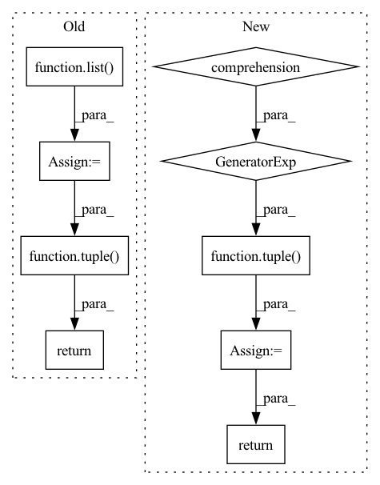

Pattern ID :16862
Before Change
param_groups,
states
):
params = list( params)
for group_idx, group_mapping in enumerate(param_mapping):
group = param_groups[group_idx]
amsgrad = group["amsgrad"]
beta1, beta2 = group["betas"]
for param_idx in group_mapping:
p = params[param_idx]
if p.gradient is None:
continue
grad = p.gradient
p = p * (1 - group["lr"] * group["weight_decay"])
state = states[param_idx]
state["step"] += 1
bias_correction1 = 1 - beta1**state["step"]
bias_correction2 = 1 - beta2**state["step"]
state["exp_avg"] = state["exp_avg"] * beta1 + (1 - beta1) * grad
state["exp_avg_sq"] = state["exp_avg_sq"] * beta2 + (1 - beta2) * grad * grad
if amsgrad:
state["max_exp_avg_sq"] = torch.max(state["max_exp_avg_sq"], state["exp_avg_sq"])
denom = state["max_exp_avg_sq"] / math.sqrt(bias_correction2) + group["eps"]
else:
denom = state["exp_avg_sq"] / math.sqrt(bias_correction2) + group["eps"]
step_size = group["lr"] / bias_correction1
params[param_idx] = p - step_size * (state["exp_avg"] / denom)
return tuple( params)
After Change
step_size = group["lr"] / bias_correction1
p.update = step_size * (state["exp_avg"] / denom)
out = tuple( p - p.update for p in params if hasattr(p, "update"))
for p in params:
if hasattr(p, "update"):
del p.update
return out
In pattern: SUPERPATTERN
Frequency: 3
Non-data size: 9
Instances Fragment ID: 56375422
Project Name: leopard-ai/betty
Commit Name: 6d731ca13bf887bb15eefc85c120c681d0d9a1d0
Time: 2022-02-17
Author: sangkeuc@andrew.cmu.edu
File Name: betty/optim/adamw.py
M Class Name: AnonimousClass
N Class Name: AnonimousClass
M Method Name: fadamw(4)
N Method Name: fadamw(4)
M Parent Class:
N Parent Class:
M File Name: betty/optim/adamw.py
N File Name: betty/optim/adamw.py
M Start Line: 11
M End Line: 44
N Start Line: 24
N End Line: 47
Before Change
args.append(self.storage_state)
code = self.loader.code_per_stage[stage]
result = code(*args)
args = list( result)
if first_stage:
first_stage = False
self.memory_context.end_batch(b_ix)
return tuple( x[:len(batch_indices)] for x in args)
def __next__(self):
result = self.output_queue.get()
if result is None:After Change
args[f"result_{node_id}"] = result
pass
result = tuple( args[f"result_{x}"] for x in outputs)
return result
def __next__(self):
result = self.output_queue.get() Fragment ID: 56375424
Project Name: libffcv/ffcv
Commit Name: f8baf227d1243d4207c082d8ea11b89b5a73da32
Time: 2022-02-08
Author: leclerc@mit.edu
File Name: ffcv/loader/epoch_iterator.py
M Class Name: EpochIterator
N Class Name: EpochIterator
M Method Name: run_pipeline(5)
N Method Name: run_pipeline(5)
M Parent Class: Thread
N Parent Class: Thread
M File Name: ffcv/loader/epoch_iterator.py
N File Name: ffcv/loader/epoch_iterator.py
M Start Line: 113
M End Line: 142
N Start Line: 111
N End Line: 140
Before Change
param_groups,
states
):
params = list( params)
for group_idx, group_mapping in enumerate(param_mapping):
group = param_groups[group_idx]
amsgrad = group["amsgrad"]
beta1, beta2 = group["betas"]
weight_decay = group["weight_decay"]
for param_idx in group_mapping:
p = params[param_idx]
if p.gradient is None:
continue
grad = p.gradient
print("adam grad:", grad)
state = states[param_idx]
state["step"] += 1
bias_correction1 = 1 - beta1**state["step"]
bias_correction2 = 1 - beta2**state["step"]
if weight_decay != 0:
grad = grad + (weight_decay * p)
state["exp_avg"] = state["exp_avg"] * beta1 + (1 - beta1) * grad
state["exp_avg_sq"] = state["exp_avg_sq"] * beta2 + (1 - beta2) * grad * grad
if amsgrad:
state["max_exp_avg_sq"] = torch.max(state["max_exp_avg_sq"], state["exp_avg_sq"])
denom = state["max_exp_avg_sq"].sqrt() / math.sqrt(bias_correction2) + group["eps"]
else:
denom = state["exp_avg_sq"].sqrt() / math.sqrt(bias_correction2) + group["eps"]
step_size = group["lr"] / bias_correction1
params[param_idx] = p - step_size * (state["exp_avg"] / denom)
return tuple( params)
After Change
step_size = group["lr"] / bias_correction1
p.update = step_size * (state["exp_avg"] / denom)
out = tuple( p - p.update for p in params if hasattr(p, "update"))
for p in params:
if hasattr(p, "update"):
del p.update
return out
Fragment ID: 56375425
Project Name: leopard-ai/betty
Commit Name: 6d731ca13bf887bb15eefc85c120c681d0d9a1d0
Time: 2022-02-17
Author: sangkeuc@andrew.cmu.edu
File Name: betty/optim/adam.py
M Class Name: AnonimousClass
N Class Name: AnonimousClass
M Method Name: fadam(4)
N Method Name: fadam(4)
M Parent Class:
N Parent Class:
M File Name: betty/optim/adam.py
N File Name: betty/optim/adam.py
M Start Line: 12
M End Line: 49
N Start Line: 20
N End Line: 51